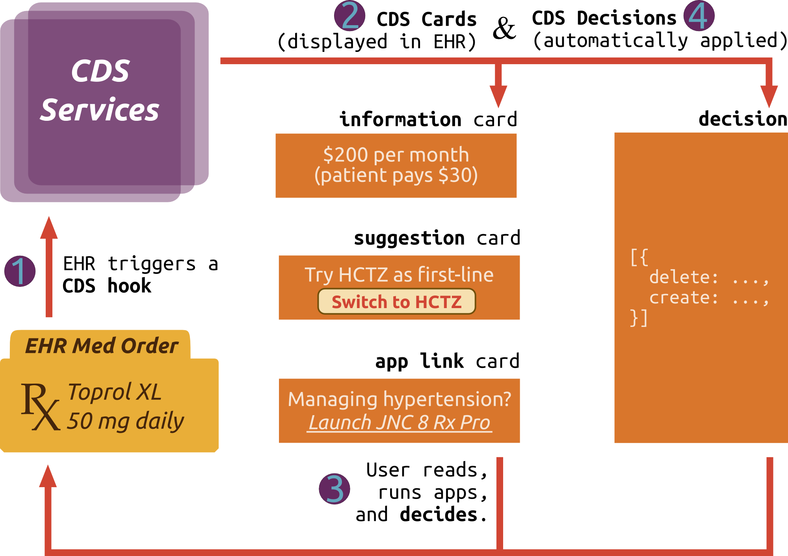

Overview
This specification describes a “hook”-based pattern for invoking decision support from within a clinician’s EHR workflow. The API supports:
- Synchronous, workflow-triggered CDS calls returning information and suggestions
- Launching a user-facing SMART app when CDS requires deeper interaction
- Long-running, non-modal CDS sessions that observe EHR activity in progress
How it works
User activity inside the EHR triggers CDS hooks in real-time. For example:
patient-viewwhen opening a new patient recordmedication-prescribeon authoring a new prescriptionorder-reviewon viewing pending orders for approval
When a triggering activity occurs, the EHR notifies each CDS service registered for the activity. These services must then provide near-real-time feedback about the triggering event. Each service gets basic details about the EHR
context (via the context parameter of the hook) plus whatever
service-specific data are required (via the pre-fetch-template parameter).

CDS Cards
Each CDS service can return any number of cards in response to the hook. Cards convey some combination of text (information card), alternative suggestions (suggestion card), and links to apps or reference materials (app link card). A user sees these cards — one or more of each type — embedded in the EHR, and can interact with them as follows:
information card: provides text for the user to read.
suggestion card: provides a specific suggestion for which the EHR renders a button that the user can click to accept. Clicking automatically populates the suggested change into the EHR’s UI.
app link card: provides a link to an app (often a SMART app) where the user can supply details, step through a flowchart, or do anything else required to help reach an informed decision. When the user has finished, flow returns to the EHR. At that point, the EHR re-triggers the initial CDS hook. The re-triggering may result in different cards, and may also include decisions (see below).
CDS Decisions
In addition to cards, a CDS service may also return decisions — but only
after a user has interacted with the service via an app link card.
Returning a decision allows the the CDS service to communicate the user’s choices to the EHR without displaying an additional card. For
example, a user might launch a hypertension management app, and upon
returning to the EHR’s prescription page she expects her new blood pressure
prescription to “just be there”. By returning a decision instead of a card,
the CDS service achieves this expected behavior. (Note: To return a
decision after a user interaction, the CDS service must maintain state
associated with the request’s hookInstance;
when the EHR invokes the hook for a second time with the same
hookInstance, the service can respond with decisions on as well as cards.)
Try it!
You can try CDS Hooks in our test harness at http://sandbox.cds-hooks.org
CDS Services
Discovery
curl "https://example.com/cds-services"
The above command returns JSON structured like this:
{
"services": [
{
"hook": "patient-view",
"title": "Static CDS Service Example",
"description": "An example of a CDS service that returns a static set of cards",
"id": "static-patient-greeter",
"prefetch": {
"patientToGreet": "Patient/{{Patient.id}}"
}
},
{
"hook": "medication-prescribe",
"title": "Medication Echo CDS Service",
"description": "An example of a CDS service that simply echos the medication being prescribed",
"id": "medication-echo",
"prefetch": {
"patient": "Patient/{{Patient.id}}",
"medications": "MedicationOrder?patient={{Patient.id}}"
}
}
]
}
Developers of CDS Services must provide a well-known endpoint allowing the EHR to discover all available CDS Services, including information such as the purpose of the CDS Service, when it should be invoked, and any data that is requested to be prefetched.
HTTP Request
The discovery endpoint is always available at {baseUrl}/cds-services. For example, if the baseUrl is https://example.com, the EHR would invoke:
GET https://example.com/cds-services
Response
The response to the discovery endpoint is an object containing a list of CDS Services.
| Field | Description |
|---|---|
services |
array. An array of CDS Services |
Each CDS Service is described by the following attributes.
| Field | Description |
|---|---|
hook |
string or url. The hook this service should be invoked on. See Hook Catalog |
title |
string. The human-friendly name of this service |
description |
string. The description of this service |
id |
string. The {id} portion of the URL to this service which is available at{baseUrl}/cds-services/{id} |
prefetch |
object. An object containing key/value pairs of FHIR queries to data that this service would like the EHR prefetch and provide on each service call. The key is a string that describes the type of data being requested and the value is a string representing the FHIR query. (todo: link to prefetching documentation) |
HTTP Status Codes
| Code | Description |
|---|---|
200 OK |
A successful response |
Calling a CDS Service
curl
-X POST \
-H 'Content-type: application/json' \
--data @hook-details-see-example-below
"https://example.com/cds-services/static-patient-greeter"
{
"hookInstance" : "d1577c69-dfbe-44ad-ba6d-3e05e953b2ea",
"fhirServer" : "http://hooks.smarthealthit.org:9080",
"hook" : "patient-view",
"redirect" : "http://hooks2.smarthealthit.org/service-done.html",
"user" : "Practitioner/example",
"context" : [],
"patient" : "1288992",
"prefetch" : {
"patientToGreet" : {
"response" : {
"status" : "200 OK"
},
"resource" : {
"resourceType" : "Patient",
"gender" : "male",
"birthDate" : "1925-12-23",
"id" : "1288992",
"active" : true
}
}
}
}
HTTP Request
An EHR calls a CDS service by POSTing a JSON document to the service
endpoint, which can be constructed from the CDS Service base URL and an
individual service id as {baseUrl}/cds-services/{service.id}. The CDS Hook
call includes a JSON POST body with the following input fields:
| Field | Description |
|---|---|
hook |
string or URL. The hook that triggered this CDS Service call (todo: link to hook documentation) |
hookInstance |
string. A UUID for this particular hook call (see more information below) |
fhirServer |
URL. The base URL EHR’s FHIR server. The scheme should be https |
oauth |
object. The OAuth2 authorization providing access to the EHR’s FHIR server (see more information below) |
redirect |
URL. The URL an app link card should redirect to (see more information below) |
user |
string. The FHIR resource type + id representing the current user. The type is one of: Practitioner, Patient, or RelatedPerson. For example, Practitioner/123 |
patient |
string. The FHIR Patient.id of the current patient in context |
encounter |
string. The FHIR Encounter.id of the current encounter in context |
context |
object. Hook-specific contextual data that the CDS service will need. For example, with the medication-prescribe hook this will include MedicationOrder being prescribed. |
prefetch |
object. The FHIR data that was prefetched by the EHR (see more information below) |
hookInstance
While working in the EHR, a user can perform
multiple activities in series or in parallel. For example, a clinician might prescribe
two drugs in a row; each prescription activity would be assigned a
unique hookInstance. The [[activity catalog|Activity]]
provides a description of what events should initiate and terminate
a given hook. This allows an external
service to associate requests with activity state, which is necessary to
support the following app-centric decision sequence, where
the steps are tied together by a common hookInstance:
- EHR invokes CDS hook
- CDS service returns app link card
- User clicks app link and interacts with app
- Flow returns to EHR, which re-invokes CDS hook
- CDS service returns decision with user’s choice
Note: the hookInstance is globally unique and should contain enough entropy
to be un-guessable.
oauth
Security details allowing the CDS service to connect to the EHR’s
FHIR server. These fields allow the CDS service to access EHR data in a
context limited by the current user’s privileges. expires expresses the
token lifetime as an integer number of seconds. scope represents the set of
scopes assigned to this token (see SMART on FHIR
scopes).
Finally, token is a bearer token to be presented with any API calls the CDS
service makes to the EHR, by including it in an Authorization header like:
Authorization: Bearer {{token}}
redirect
This field is only used by services that will return an app
link card: when a user clicks the card’s link to launch an app, it becomes
the app’s job to send the user to this redirect URL upon completion of
user interaction. (Design note: this field is supplied up-front, as part of
the initial request, to avoid requiring the EHR to append any content to app
launch links. This helps support an important “degenerate” use case for app
link cards: pointing to static content. See below for details.)
prefetch
As a performance tweak, the EHR may pass along data according to the service’s [[Prefetch-Template]]. This helps provide the service with all the data it needs to efficiently compute a set of recommendations. Each key matches a key described in the CDS Service Discovery document; and each value is a FHIR Bundle.entry indicating a response status and returned resource.
Note that in the absence of prefetch, an external service can always execute
FHIR REST API calls against the EHR server to obtain additional data ad-hoc.)
CDS Service Response
Example response
{
"cards": [
{
"summary": "Success Card",
"indicator": "success",
"detail": "This is an example success card.",
"source": {
"label": "Static CDS Service Example",
"url": "https://example.com"
},
"links": [
{
"label": "Google",
"url": "https://google.com",
"type": "absolute"
},
{
"label": "Github",
"url": "https://github.com",
"type": "absolute"
},
{
"label": "SMART Example App",
"url": "https://smart.example.com/launch",
"type": "smart"
}
]
},
{
"summary": "Info card",
"indicator": "info",
"source": {
"label": "Static CDS Service Example"
}
}
]
}
| Field | Description |
|---|---|
cards |
array. An array of Cards. Cards can provide a combination of information (for reading), suggested actions (to be applied if a user selects them), and links (to launch an app if the user selects them). The EHR decides how to display cards, but we recommend displaying suggestions using buttons, and links using underlined text. |
decisions |
array. An array of Decisions. A decision should only be generated after interacting with the user through an app link. Decisions are designed to convey any choices the user made in an app session. |
represents a user’s choice made while interacting with the CDS Provider’s external app. The first call to a service should never include any decisions, since no user interaction has occurred yet.
Each Card is described by the following attributes.
| Field | Description |
|---|---|
summary |
string. one-sentence, <140-character summary message for display to the user inside of this card. |
detail |
string. optional detailed information to display, represented in Markdown. (For non-urgent cards, the EHR may hide these details until the user clicks a link like “view more details…”.) |
indicator |
string. urgency/importance of what this card conveys. Allowed values, in order of increasing urgency, are: success, info, warning, hard-stop. The EHR can use this field to help make UI display decisions such as sort order or coloring. The value hard-stop indicates that the workflow should not be allowed to proceed. |
source |
object. grouping structure for the Source of the information displayed on this card. The source should be the primary source of guidance for the decision support the card represents. |
suggestions |
array of Suggestions, which allow a service to suggest a set of changes in the context of the current activity (e.g. changing the dose of the medication currently being prescribed, for the medication-prescribe activity) |
links |
array of Links, which allow a service to suggest a link to an app that the user might want to run for additional information or to help guide a decision. |
The Source is described by the following attributes.
| Field | Description |
|---|---|
label |
string. A short, human-readable label to display for the source of the information displayed on this card. If a url is also specified, this may be the text for the hyperlink. |
url |
URL. An optional absolute URL to load (via GET, in a browser context) when a user clicks on this link to learn more about the organization or data set that provided the information on this card. Note that this URL should not be used to supply a context-specific “drill-down” view of the information on this card. For that, use link.url instead. |
Each Suggestion is described by the following attributes.
| Field | Description |
|---|---|
label |
string. human-readable label to display for this suggestion (e.g. the EHR might render this as the text on a button tied to this suggestion). |
uuid |
string. unique identifier for this suggestion. For details see Suggestion Tracking Analytics |
create |
string. new resource(s) that this suggestion applies within the current activity (e.g. for medication-prescribe, this holds the updated prescription as proposed by the suggestion). |
delete |
string. id(s) of any resources to remove from the current activity (e.g. for the order-review activity, this would provide a way to remove orders from the pending list). In activities like medication-prescribe where only one “content” resource is ever relevant, this field may be omitted. |
Each Link is described by the following attributes.
| Field | Description |
|---|---|
label |
string. human-readable label to display for this link (e.g. the EHR might render this as the underlined text of a clickable link). |
url |
URL. URL to load (via GET, in a browser context) when a user clicks on this link. Note that this may be a “deep link” with context embedded in path segments, query parameters, or a hash. In general this URL should embed enough context for the app to determine the hookInstance, and redirect url upon downstream launch, because the EHR will simply use this url as-is, without appending any parameters at launch time. |
type |
string. The type of the given URL. There are two possible values for this field. A type of absolute indicates that the URL is absolute and should be treated as-is. A type of smart indicates that the URL is a SMART app launch URL and the EHR should ensure the SMART app launch URL is populated with the appropriate SMART launch parameters. |
Each Decision is described by the following attributes.
| Field | Description |
|---|---|
create |
array of strings. id(s) of new resource(s) that the EHR should create within the current activity (e.g. for medication-prescribe, this would be the updated prescription that a user had authored in an app session). |
delete |
array of strings. id(s) of any resources to remove from the current activity (e.g. for the order-review activity, this would provide a way to remove orders from the pending list). In activities like medication-prescribe where only one “content” resource is ever relevant, this field may be omitted. |
Analytics
Whenever a user clicks a button from a “suggestion” card, the EHR uses the
suggestion uuid to notify the CDS Service’s analytics endpoint via a POST
with an empty body:
POST {baseUrl}/cds-services/{serviceId}/analytics/{uuid}
If a suggestion has no uuid, the EHR does not send a notification.
Prefetch
A performance tweak
If real-world performance were no issue, an EHR could launch a CDS Service passing only context data, and without passing any additional clinical data up-front. The CDS Service could then request any data it needed via the EHR’s FHIR REST API.
But CDS services must respond quickly (on the order of 500 ms), and so we provide a performance tweak that allows an app to register a set of “prefetch templates” with the EHR ahead of time.
The prefetch templates are a dictionary read and search requests to supply
relevant data, where the following variables are defined:
| variable | meaning |
|---|---|
{{Patient.id}} |
The id of the patient in context for this activity (e.g. 123) |
{{User.id}} |
The type and id of the user for this session (e.g. Practitioner/123) |
Before calling the CDS Service, the EHR will fill out this template, replacing
{{Patient.id}} with the id of the current patient (e.g. 123) inside of any
URL strings. The EHR then executes the requests in the template as a set of
FHIR read and search operations (exactly as though they had been submitted
to the server’s “transaction” endpoint as a FHIR batch-type bundle).
The resulting response, which must be rendered in a single page — no “next
page” links allowed — is passed along to the CDS Service using the
prefetch parameter (see below for a complete example).
Example prefetch request
{
"prefetch": {
"p": "Patient/{{Patient.id}}",
"a1c": "Observation?patient={{Patient.id}}&code=4548-4&_count=1&sort:desc=date"
}
}
Here is an example prefetch property from a CDS service discovery endpoint. The goal is to know, at call time:
- Patient demographics
- Most recent Hemoglobin A1c reading for this patient
Example prefetch response
{
"prefetch": {
"p":{
"response": {
"status": "200 OK"
},
"resource": {
"resourceType": "Patient",
"gender": "male",
"birthDate": "1974-12-25",
"...": "<snipped for brevity>"
}
},
"a1c": {
"response": {
"status": "200 OK"
},
"resource":{
"resourceType": "Bundle",
"type": "searchset",
"entry": [{
"resource": {
"resourceType": "Observation",
"code": {
"coding": [{
"system": "http://loinc.org",
"code": "4548-4",
"display": "Hemoglobin A1c"
}]
},
"...": "<snipped for brevity>"
}
}]
}
}
}
}
The response is augmented to include two prefetch values, where the dictionary
keys match the request keys (p and a1c in this case).
Note that a missing key indicates that an EHR has not attempted to supply a given prefetch value; the CDS service can issue the request manually at call time to fetch the required data.“
Hook Catalog
Pre-defined CDS hooks
We describe a set of hooks to support common use cases out of the box. But this is not a closed set; anyone can define new hooks to address new use cases. To propose a new hooks please add it to the proposed hooks page of our wiki.
Note that each hook (e.g. medication-prescribe) represents something the user is doing in the EHR; various hooks might respond to the same hook (e.g. a “price check” service and a “prior authorization” service might both respond to medication-prescribe).
Note also that each hook name in our official catalog is a simple string. If
you want to define custom hooks without submitting them to the catalog, then
you should use a URI (e.g.
http://my-organization/custom-hooks/patient-transmogrify).
medication-prescribe
{
"context": {
"resourceType": "MedicationOrder",
"medicationCodeableConcept": {
"...": "<snipped for brevity>"
}
}
}
Purpose: Inform an external CDS service that the user is in the process of prescribing a new medication, and solicit feedback about the prescription-in-progress.
Contextual data: The set of proposed medication prescriptions. using the
FHIR MedicationOrder resource. See example in the sidebar.
order-review
{
"context": {
"resourceType": "DiagnosticOrder",
"...": "<snipped for brevity>"
}
}
Purpose: Inform an external CDS service that the user is in the process of reviewing a set of orders (sometimes known as a “shopping cart”), and solicit feedback about the orders being reviewed.
Contextual data: The set of orders being reviewed on-screen, represented using a combination of MedicationOrder, DiagnosticOrder, DeviceUseRequest, ReferralRequest, and ProcedureRequest. See example in the sidebar.
patient-view
Purpose: Inform an external CDS service that the user has just opened a new patient record and is viewing a summary screen or “face sheet”, and solicit feedback about this patient.
Contextual data: None required beyond default context.
Community
Get Involved
There are several ways in which you can get involved with the CDS Hooks community.
- Ask a question and participate in discussions via the CDS Hooks Google Group
- Chat via Zulip at https://chat.fhir.org in the cds-hooks stream
- Contribute to the code and documentation on Github
- Check out the CDS services available for testing and contribute your own.
CDS Hooks Sprint Program
Objectives
- Promote creation of clinical-grade service integrations (EHRs + CDS Services)
- Gain implementation experience with real-world systems
- Refine the spec, balancing ease of use, flexibility, and stability
- Drive toward pilot deployments with the ability to measure results